← 返回阅读库 · 原论文目录
论文讲解阅读文档 · 论文精读 · v212
Attention被爆杀？VMamba原班人马颠覆Transformer！【vHeat论文精读】
视频时长 00:19:41；讲解文字 6,089 字符；提取讲解画面 103 张。按视频原顺序阅读，每段文字保留时间戳。
文字来自整段视频的自动语音转写，按自然停顿分段，并与 PPT / 论文页面 / 演示画面对齐。未将讲解压缩为摘要；术语、数字和口述公式请结合画面及原论文核对。 阅读稿已校正规范部分明确术语误识别；原始逐字稿和每处修改记录另行保留。
讲解画面为源视频截图（640×360），不是可编辑 PPT 文件。全片按每秒 2 帧扫描内容变化，逐步展开页保留；连续动画保留代表画面。清晰度受源视频限制。
下载完整资料包 · 含离线 HTML、PDF、Word、全部 PPT 画面和字幕。
原论文与材料
Building Vision Models upon Heat Conduction · 下载完整 PDF（16 页）
按时间阅读
00:00:00–00:00:04 · 画面 001
 00:00:00–00:00:04 · 画面 001
00:00:00–00:00:04 · 画面 001丹马斯特教廷算力力卷丹勒昆预言物理智能将崛起，一支曾打造 V-Mamba 的团队竟从宿舍热水壶找到了答案，中科院少年天团再出杀招，用热力学定律重构视觉模型，吊打 Swin Transformer，显存占用只降 75%本期硬核解读 V-Hit，看 V-Mamba 团队如何用烧开水的智慧重铸 Transformer 的新方式。
00:00:04–00:00:08 · 画面 002
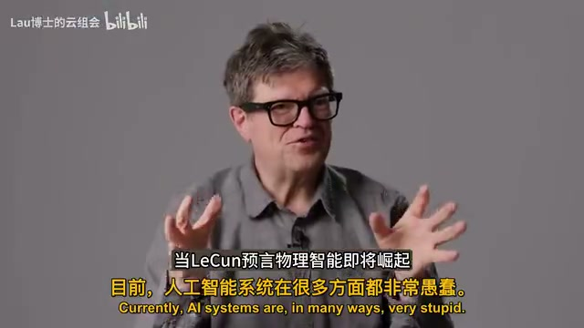
00:00:04–00:00:08 · 画面 00200:00:08–00:00:12 · 画面 003
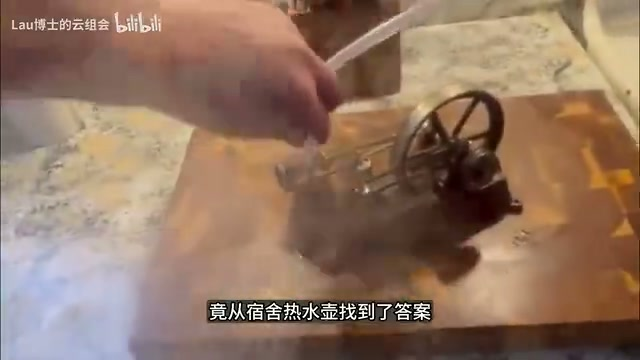
00:00:08–00:00:12 · 画面 00300:00:12–00:00:16 · 画面 004
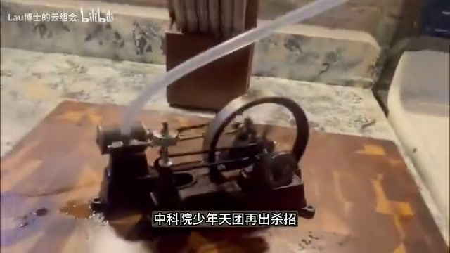
00:00:12–00:00:16 · 画面 00400:00:16–00:00:19 · 画面 005
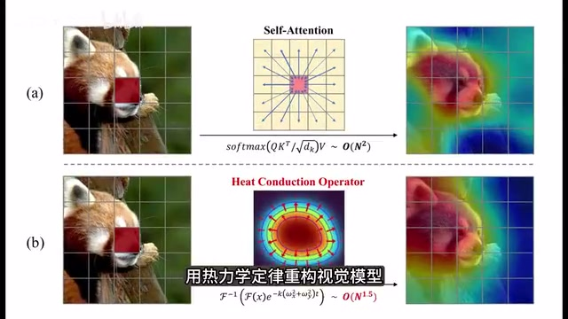
00:00:16–00:00:19 · 画面 00500:00:19–00:00:22 · 画面 006
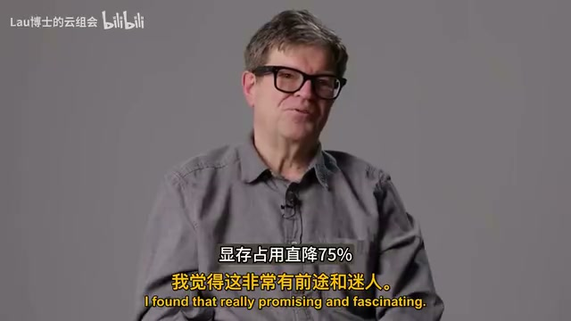
00:00:19–00:00:22 · 画面 00600:00:22–00:00:30 · 画面 007
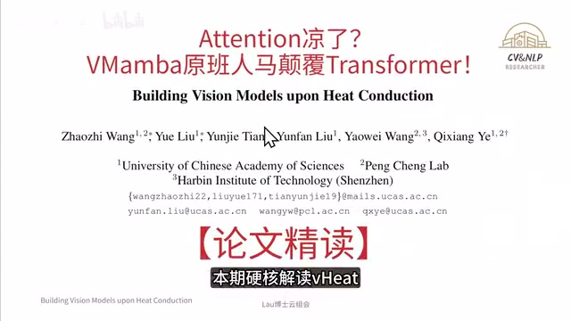
00:00:22–00:00:30 · 画面 00700:00:30–00:00:34 · 画面 008
00:00:30–00:00:34 · 画面 008欢迎来到六五博士的云组会，我每周都将至少有一篇的高质量的论文进度发布出来，相信在一系列的论文学习以后，你就能成为人工智能领域的专家。今天要跟大家来介绍一篇关于视觉模型的研究，叫 Building Vision Model Upon Heat Conduction，这篇文章来自于中科院大学恒城实验室。
00:00:34–00:00:38 · 画面 009
00:00:34–00:00:38 · 画面 00900:00:38–00:00:40 · 画面 010
00:00:38–00:00:40 · 画面 01000:00:40–00:00:44 · 画面 011
00:00:40–00:00:44 · 画面 01100:00:44–00:00:48 · 画面 012
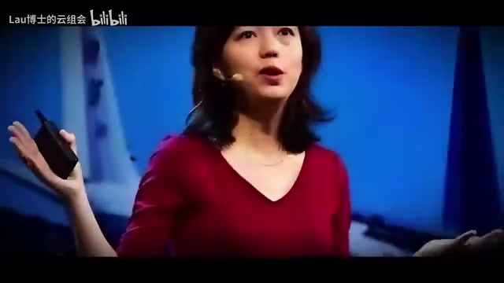
00:00:44–00:00:48 · 画面 01200:00:48–00:00:51 · 画面 013
00:00:48–00:00:51 · 画面 01300:00:51–00:01:19 · 画面 014
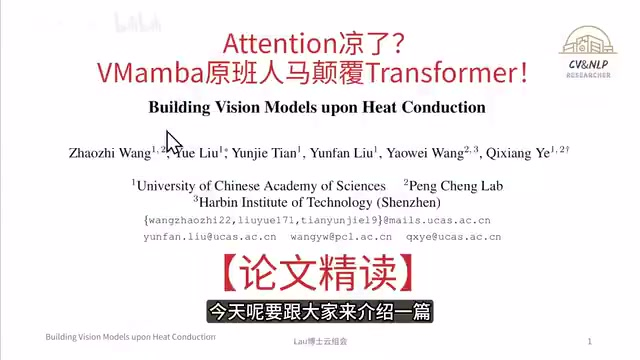
00:00:51–00:01:19 · 画面 014以及哈尔滨工业大学深圳那篇文章提出了一种基于热传导原理的视觉模型 vHeat，那旨在解决传统视觉模型在计算效率以及全局感受野方面的挑战。在今天的视频里面，我们将会从 vHeat 模型的优劣势，从论文的引言、相关工作、方法、实验结果还有结论进行梳理。
00:01:19–00:01:20 · 画面 015
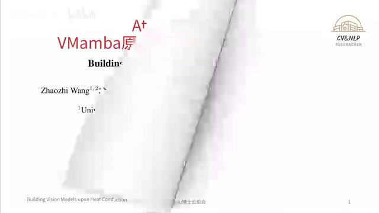
00:01:19–00:01:20 · 画面 01500:01:20–00:01:40 · 画面 016
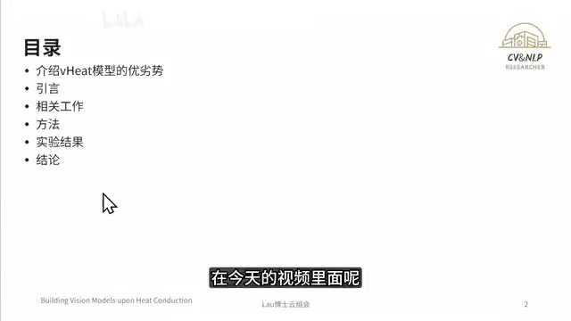
00:01:20–00:01:40 · 画面 016V-HIT 模型，它是基于热传导原理设计的视觉模型，具有全局感受野、低计算复杂度以及高可解释性等优点。针对 V-HIT 总结了三个优势以及两个劣势，分别就是。
00:01:40–00:02:09 · 画面 017
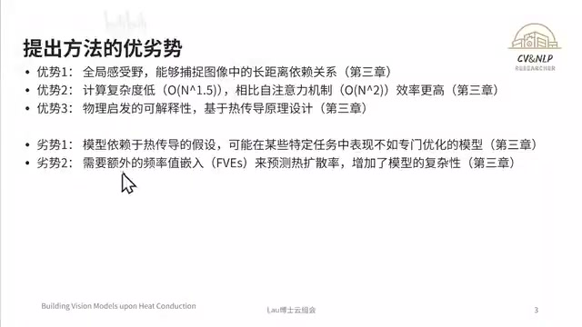
00:01:40–00:02:09 · 画面 017首先第一个 vHeat 它的这个设计是具有全局感受野的能够捕捉图像当中的长距离的依赖关系另外一个是 vHeat 具有比较低的计算复杂度它是 ON 的 1.5 次方而这个自注意力的机制的话是 O 的 N 的平方因此是要比 ON 的平方是要低了 0.5 个次方的另外
00:02:09–00:02:10 · 画面 018
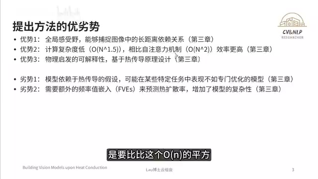
00:02:09–00:02:10 · 画面 01800:02:10–00:02:47 · 画面 019
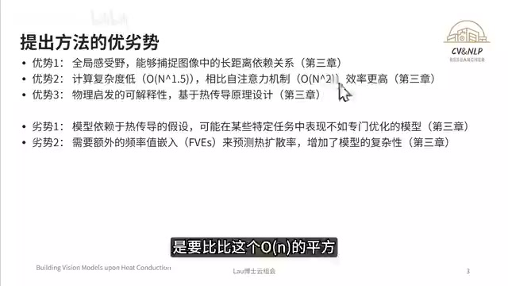
00:02:10–00:02:47 · 画面 019第三个优势就是它是源于这种物理上面的启发的，因此它是有比较好的这种可解释性的，基于这个热传导的原理设计的。当然它也有劣势，其中第一个劣势就是它由于是依赖于这种热传导的这种假设，可能在某一些的任务上面的表现就不如专门油画的模型了。另外它是需要额外的频率值嵌入来预测热扩散效率，也增加模型的复杂性。在第一章的引言部分，作者就指出了这种 CNN 卷积神经网络在视觉任务上面存在着局限性，主要就是体现在局部的感受野以及固定的卷积操作上，很难去捕捉图像里面的长距离的依赖关系。
00:02:47–00:02:48 · 画面 020
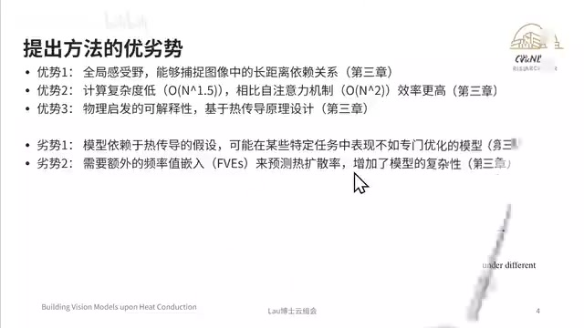
00:02:47–00:02:48 · 画面 02000:02:48–00:03:58 · 画面 021
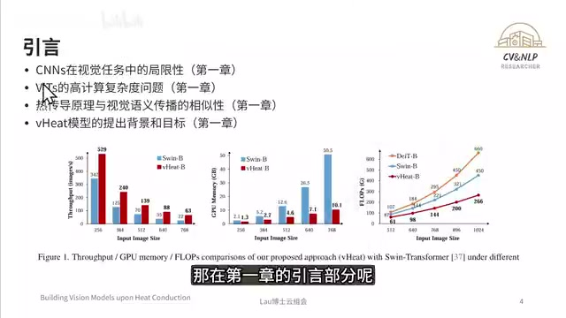
00:02:48–00:03:58 · 画面 021对于自注意力机制的视觉变换器 VIT，虽然有全局的特征依赖，但是它的计算的复杂度比较高，ON 的平方达到，很难去处理一些高分辨率的图片。为了去解决这些问题，作者就从热传导的原理获得了启发，提出了 vHeat 的模型。那热传导的这个过程呢。跟视觉语义的传播呢。具有这种相似性那所以呢vHeat 的模型呢它透过这个热传导算子。
实现了全局的感触。以及比较低的计算复杂度。那在这里呢就展示了图一这个图一呢实际上就是为了展示 vHeat 的。它在各种不同场景下的。一个高效的指标的展示。那我们一个一个来看了。首先呢我们看到这个图的。所有三个图的横轴。
00:03:58–00:04:01 · 画面 022
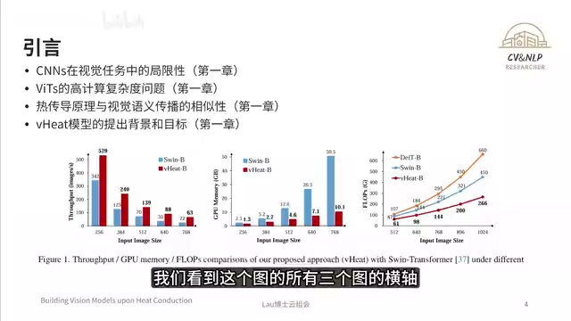
00:03:58–00:04:01 · 画面 022它都是这个 image size它的重轴呢
00:04:01–00:04:02 · 画面 023
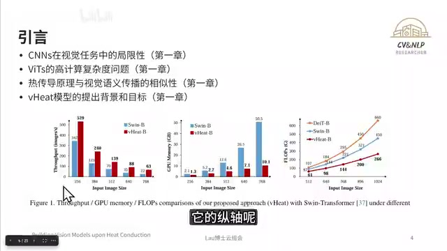
00:04:01–00:04:02 · 画面 02300:04:02–00:04:08 · 画面 024
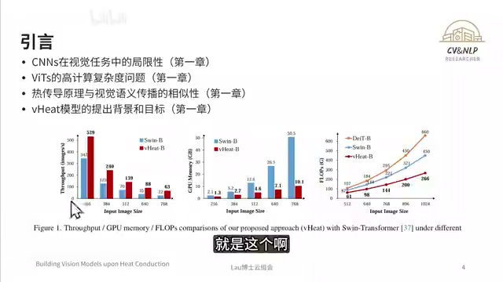
00:04:02–00:04:08 · 画面 024就是这个第一个图的重轴是这个吞吐量。那这个指标是越大越好的。另外一个是这个
00:04:08–00:04:12 · 画面 025
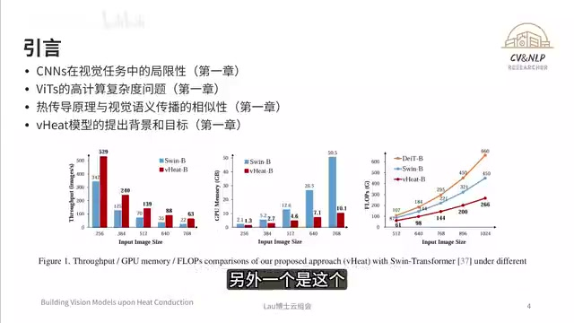
00:04:08–00:04:12 · 画面 025后面两个都是指标越小越好的。
00:04:12–00:04:59 · 画面 026
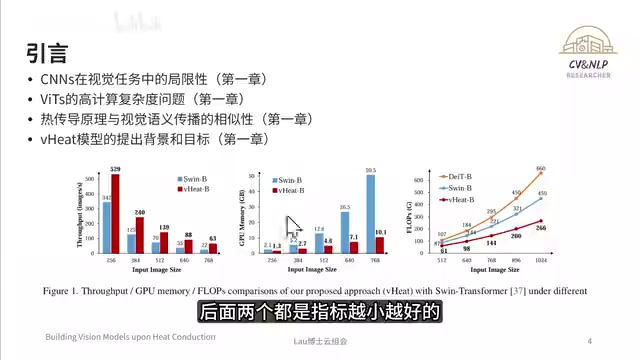
00:04:12–00:04:59 · 画面 026分别呢是这个 GPU 的就是这个显存后面这个 flow 呢就是一个算力的这个需求。那 OK 我们来看到就是。在这个吞吐量里面。这个红色就是 vHeat那它呢就是要比 Swing B 呢。G基本上是两倍它的这个吞吐量是达到两倍。然后呢这个它的显存的占用啊。基本上就是有一些情况啊。像这个 256 跟 384 的话就是不到二分之一。
就是像这个的话就可能只有三分之一不到啊。那还有这些差差的比较多的。就省的比较多啊像这些的话也是有类似的情况。说明了它这个非常高效。
00:04:59–00:05:13 · 画面 027
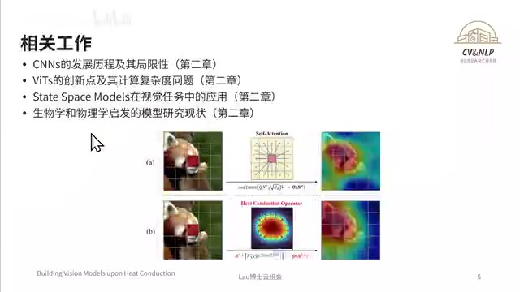
00:04:59–00:05:13 · 画面 027相关工作的前两部分呢在第一章的内容呢也是有所提及了那后面的这两个的 State Space Model 呢以及这个生物学和物理学的这个启发呢也是为这个 vHeat 奠定了基础
00:05:13–00:05:28 · 画面 028
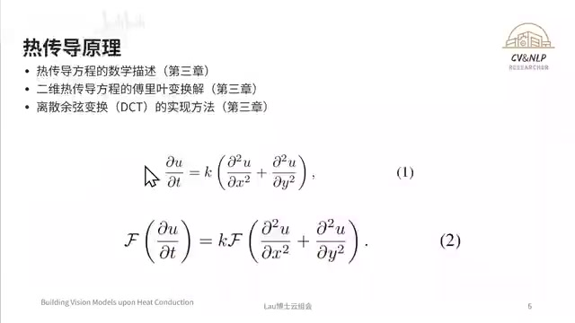
00:05:13–00:05:28 · 画面 028那在第三章里面呢作者就开始详细的去介绍了热传导的原理那热传导的方程呢，它描述的是热量在二维空间中传播的过程。它的数学形式呢，像这个公式一所示。这个 K 呢，是热扩散率。那通过这个傅里叶变换就可以得到这个方程的锦。那为了呢，在离散的这个图像数据上面实现这个热传导，那作者呢，还用了这个离散余弦变换 DCT，以及呢，逆离散的
00:05:28–00:05:33 · 画面 029
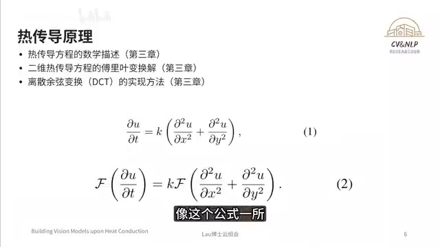
00:05:28–00:05:33 · 画面 02900:05:33–00:06:10 · 画面 030
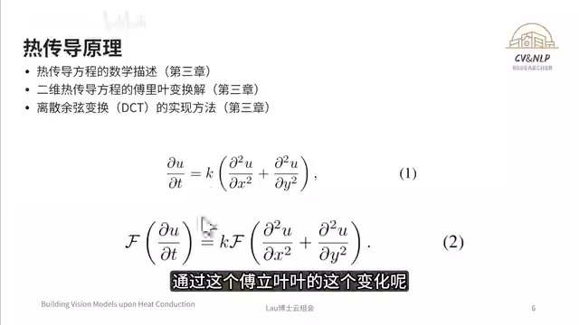
00:05:33–00:06:10 · 画面 030余弦变换 IDCTDCT 将图像从空间域转化到频率域，空域到频率，IDCT 就是频率到空域。这样子做就不仅仅能够提高计算效率，还能够使得模型能够处理离散的图像数据。
00:06:10–00:06:42 · 画面 031
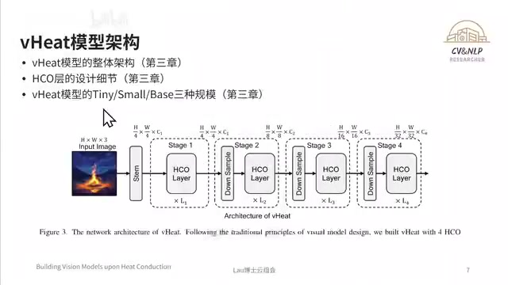
00:06:10–00:06:42 · 画面 031那在文章的第三章里面，作者详细的去介绍了 VHIP 模型的整体架构，那 VHIP 模型呢，它是基于这个热传导算子 HCO 来设计的，能够实现这个全局的感受野以及低的这个计算复杂度模型它是由多个 HCO 块组成的，通过下采样来连接，形成了一个层次化的特征提取的结构，在这里我们可以看到这里有四个 StageStage 跟 Stage 之间都通过下采样进行连接，每个的 HCO 块都有 HCO 的 LayerHCO 的
00:06:42–00:06:45 · 画面 032
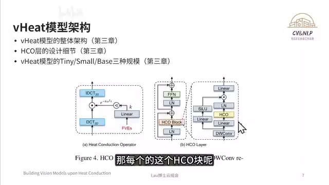
00:06:42–00:06:45 · 画面 03200:06:45–00:06:48 · 画面 033
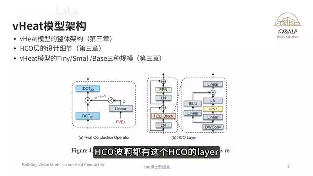
00:06:45–00:06:48 · 画面 03300:06:48–00:06:56 · 画面 034
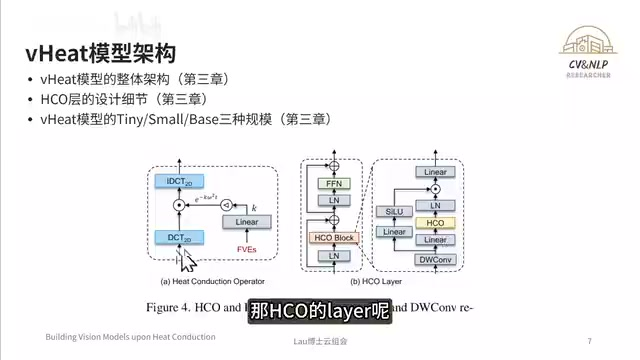
00:06:48–00:06:56 · 画面 034Layer 它通过 DCT 以及 IDCT 来实现热传导引入了可以学习的频率值嵌入也就是 FVEs 来预测热扩散率这个 vHeat 它就提供了 tiny、small、base 三种规模来去应对不同的计算资源以及任务需求的场景接下来作者就详细的去介绍了热传导算子的设计跟实现
00:06:56–00:07:12 · 画面 035
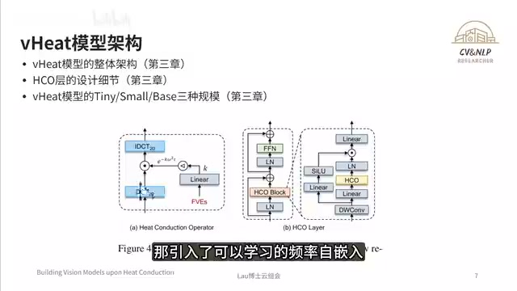
00:06:56–00:07:12 · 画面 03500:07:12–00:07:19 · 画面 036
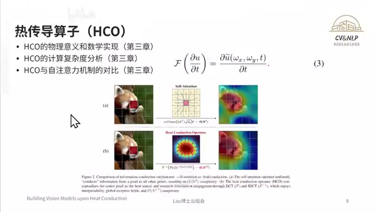
00:07:12–00:07:19 · 画面 036HCO 将图像的块设为热源通过热传导模拟的视觉语义进行传播它的数学的实现就是基于余弦变换离散的余弦变换 DCT 以及逆的一个变换 IDCT 它的复杂度就是前面提到的是 ON 的 1.5 相比于
00:07:19–00:07:22 · 画面 037
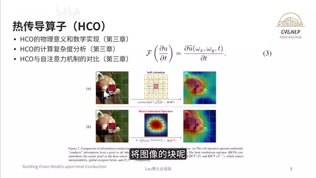
00:07:19–00:07:22 · 画面 03700:07:22–00:07:51 · 画面 038
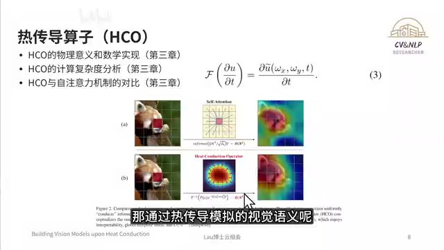
00:07:22–00:07:51 · 画面 038这个自注意力的话呢，它就是效率会更高啊，自注意力就是 ON 的平方，那这个公式 3 呢，它就展现了这个 HCO 的离散的实现形式，那我们来看这个图 2 啊，这个图 2 呢，它就是讲了这种可视化的一个角度去看 cell attention 跟这个 heat 的这个方法它的一些不同
00:07:51–00:07:54 · 画面 039
00:07:51–00:07:54 · 画面 03900:07:54–00:08:11 · 画面 040
00:07:54–00:08:11 · 画面 040那我们其实可以看得到，那自注意力的话呢，它是通过计算所有这个像素之间的这种相似性来传导这个信息的，那 HCO 呢，它是用这种热传导的这种形式来计算的，那不一样的地方，如果从视觉上来看是怎么样，我们可以看得到，像这个 cell of tension 的话，它更多的像是从某一个像素然后去就相对来说它是比较散的
00:08:11–00:08:12 · 画面 041
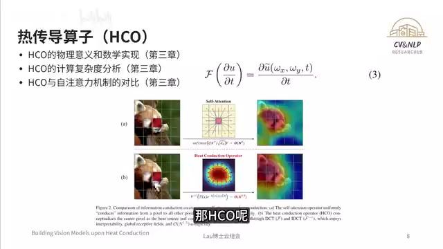
00:08:11–00:08:12 · 画面 04100:08:12–00:08:17 · 画面 042
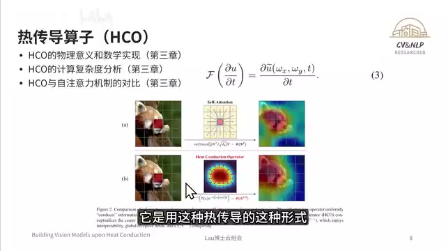
00:08:12–00:08:17 · 画面 04200:08:17–00:08:58 · 画面 043
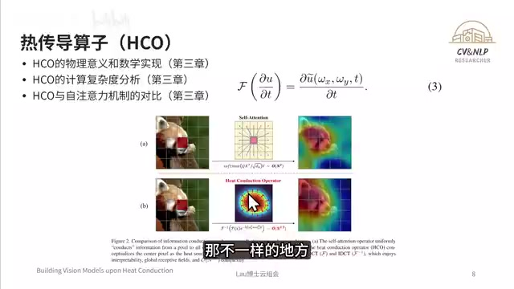
00:08:17–00:08:58 · 画面 043我们可以看得到就是这个小熊猫它在这个选的这个像素点以后它是这里一块然后下面这些呢就不会那么连续的它会向外面去扩散，那像如果是 HIT 的这个方法的话呢，那它主要就是集中在它的周围，那看起来明显是这个它在视觉上面呢会更符合这种逻辑上的这个要求
00:08:58–00:09:15 · 画面 044
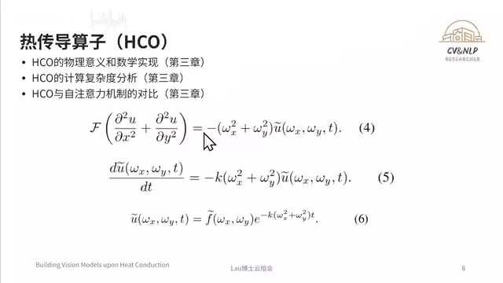
00:08:58–00:09:15 · 画面 044公式 4 就描述了热传导方程在平域里面的一个形式，公式 5 就是将公式 4 进一步的去简化成一个常微分的方程的形式，公式 6 就给出了热传导方程在平域里面的一个解，公式 7 就是通过逆傅里叶变换将平域
00:09:15–00:09:16 · 画面 045
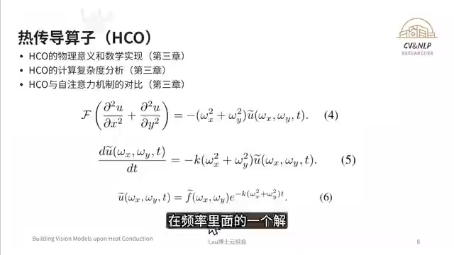
00:09:15–00:09:16 · 画面 04500:09:16–00:09:35 · 画面 046
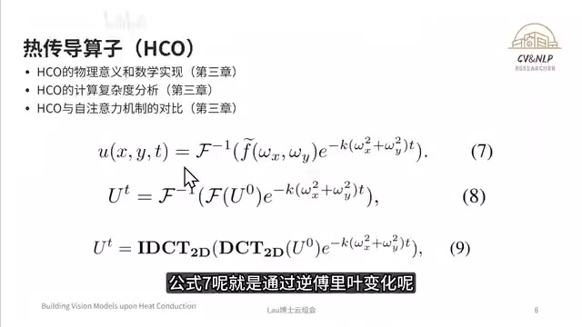
00:09:16–00:09:35 · 画面 046转换成空域。那公式 8 呢，它就描述了 HCO 在视觉数据处理中的离散的实现形式。那公式 9 呢，就是公式 8 的进一步的明确的离散实现。那其中呢，这个 DCT2D 跟这个 IDCT2D 呢，分别表示这个二维的离散余弦变换，以及这个逆离散的余弦变换。
00:09:35–00:09:44 · 画面 047
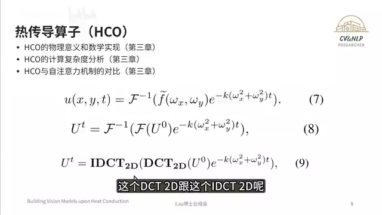
00:09:35–00:09:44 · 画面 04700:09:44–00:10:37 · 画面 048
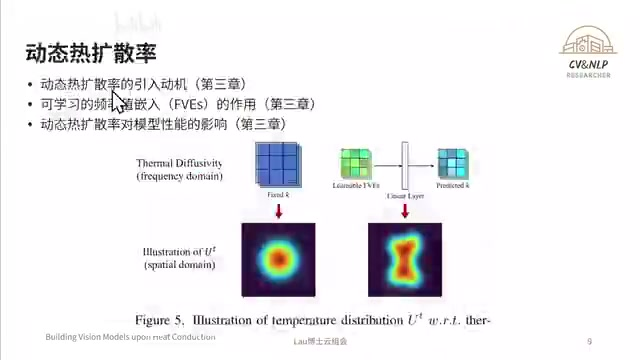
00:09:44–00:10:37 · 画面 048接下来作者就介绍了动态热扩散率的概念，热扩散率在物理的热传导当中表示热量传播的速度，在视觉的热传导当中它表示的是视觉信息的传播速度，为了让模型能够自适应的去处理不同的图像内容，作者引入了可学习的频率直线路来预测热扩散率指标它就为模型提供了频率的鲜艳知识，使得了这个扩散率能够根据图像的内容动态调整，这个图 5 它就展示了这种动态的这个扩散率的一个可视化的结果，通过去调整这个扩散率，模型就能够更好地去捕捉这个头像里面的重要的一个特征来提高这个性能
00:10:37–00:10:38 · 画面 049
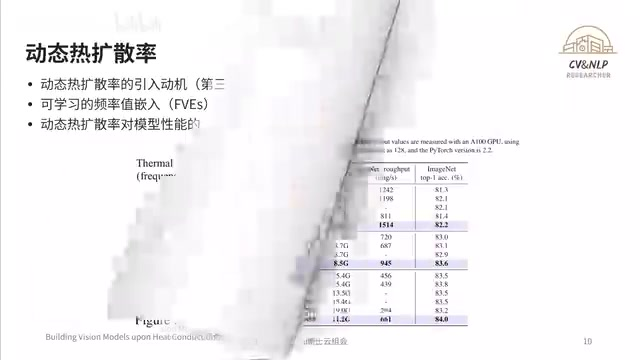
00:10:37–00:10:38 · 画面 049那到了第四章呢，就开始讲这个实验部分了，首先来看这个图像分类的这个实验的一个比较，那用的是这个 ImageNet 1K 的数据集进行一个对比，那它的这个 table1 呢，就分别有这个参数呢，也有这种不同的这个 image 的 size 有 flow 上面的比较了还有这个
00:10:38–00:11:09 · 画面 050
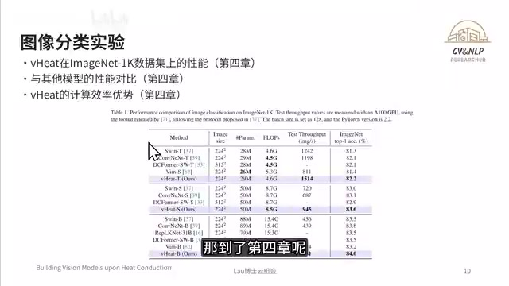
00:10:38–00:11:09 · 画面 050吞吐量的比较以及这个准确率的比较，首先我们先看准确率，这个准确率就是这个 VE，它无论是在哪一个这个 size 底下，它都是取得了最好的一个准确率的成绩，除此以外也取得了最好的这个吞吐量的成绩，再有在这个 flow 上面它也是具备很大的优势的，至少的这个 S 跟这个 B 的这两个
00:11:09–00:11:15 · 画面 051
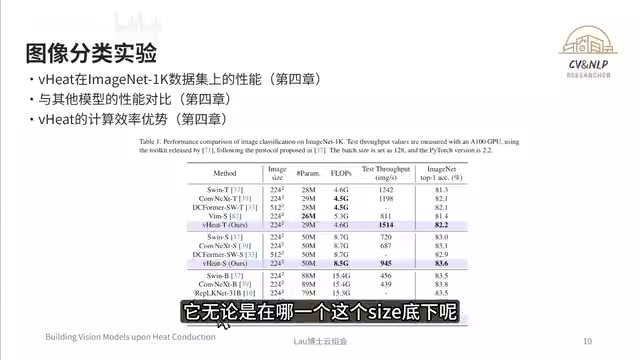
00:11:09–00:11:15 · 画面 05100:11:15–00:11:23 · 画面 052
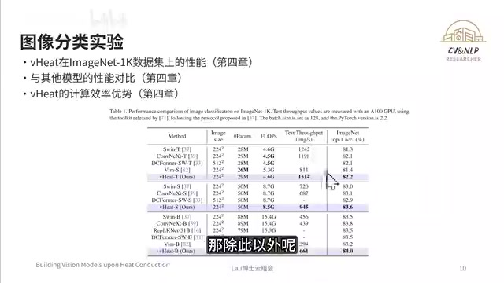
00:11:15–00:11:23 · 画面 05200:11:23–00:11:30 · 画面 053
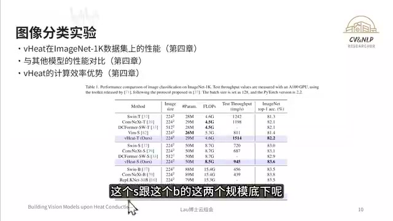
00:11:23–00:11:30 · 画面 053规模底下呢，它都是领先的，那这个 t 呢，虽然它不是最好啊，但是呢跟最好的差距也并不大，然后在 parameter 上面呢，也是类似的，那虽然它可能不是第一啊，但相差跟第一相差不大，那这个 vehicle b 呢，那它就是那它的这个 parameter 的这个表现是最好的
00:11:30–00:11:41 · 画面 054
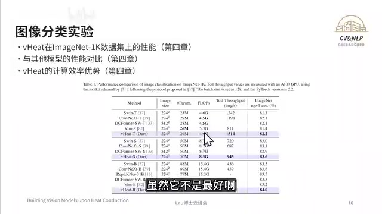
00:11:30–00:11:41 · 画面 05400:11:41–00:11:58 · 画面 055
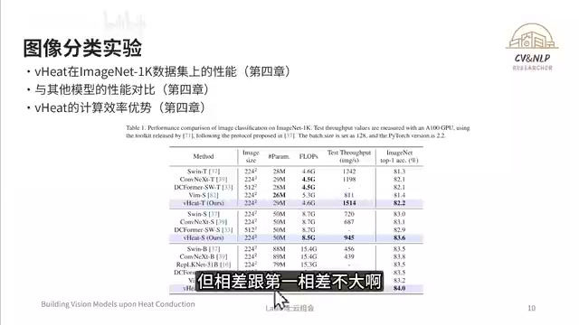
00:11:41–00:11:58 · 画面 055所以呢，这些结果呢，就是说了 vHeat 的这个模型，它的图像分类的这个任务里面呢，性能好，而且计算效率非常高，那在接下来呢，就是目标检测跟实力分隔的实验了，那这个两个方面呢，用的都是 Coco 数据集，然后呢，这个表格 Table2，那除了 Flow 上面的这个性能上并不是全方位的这个超越
00:11:58–00:11:59 · 画面 056
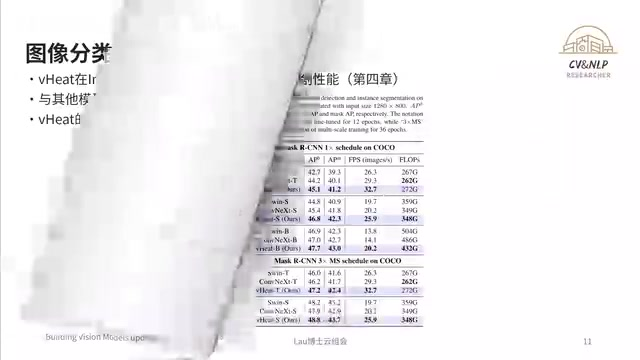
00:11:58–00:11:59 · 画面 05600:11:59–00:12:07 · 画面 057
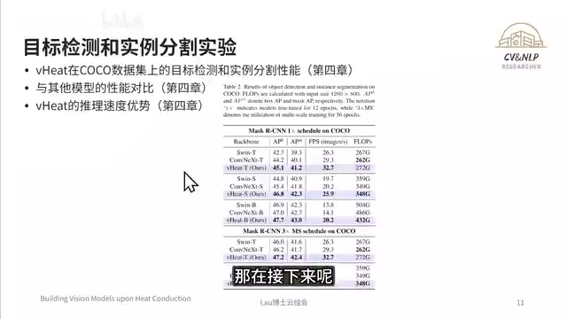
00:11:59–00:12:07 · 画面 05700:12:07–00:12:10 · 画面 058
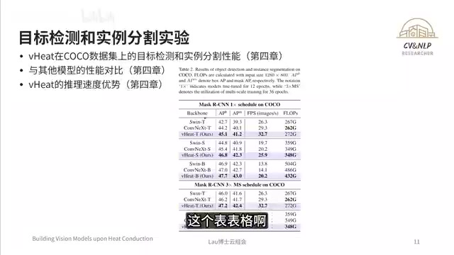
00:12:07–00:12:10 · 画面 05800:12:10–00:12:12 · 画面 059
00:12:10–00:12:12 · 画面 05900:12:12–00:12:17 · 画面 060
00:12:12–00:12:17 · 画面 060以外，不同的 size 底下的 VIN 都是全面超越了其他两个模型，尤其是 FPS 上面取得的成绩是有非常大的一个进步，两个 AP 的话相对来说提升就没有那么明显了，语义分割用的是 ADE20K 的数据集
00:12:17–00:12:25 · 画面 061
00:12:17–00:12:25 · 画面 06100:12:25–00:12:28 · 画面 062
00:12:25–00:12:28 · 画面 06200:12:28–00:12:32 · 画面 063
00:12:28–00:12:32 · 画面 06300:12:32–00:12:33 · 画面 064
00:12:32–00:12:33 · 画面 06400:12:33–00:12:39 · 画面 065
00:12:33–00:12:39 · 画面 065那在这个上面呢，那可能就没有前面的这个这么夸张啊，取得这种全方位的领先，可以看得到啊，这个 VT 跟 S 上面的这个 FPS 呢，它的成绩都是次有，当然了也是跟最好是非常接近的，而且是要远远超过这个 NASA 的其他的两个啊，就比如说像这个 SWIN S 或是这个 MATS 那都是这个还是
00:12:39–00:12:44 · 画面 066
00:12:39–00:12:44 · 画面 06600:12:44–00:12:59 · 画面 067
00:12:44–00:12:59 · 画面 06700:12:59–00:13:01 · 画面 068
00:12:59–00:13:01 · 画面 06800:13:01–00:13:09 · 画面 069
00:13:01–00:13:09 · 画面 069VHIC 还是较较领先的，当然会比最好的要稍微低一点，那其他的话呢，像这个 MOU 呢，就它的提升就一般般的，相比这个第二名，那这个 Airflow 呢，也是是领先，但当然也没有说拉开很大的差距
00:13:09–00:13:10 · 画面 070
00:13:09–00:13:10 · 画面 07000:13:10–00:13:15 · 画面 071
00:13:10–00:13:15 · 画面 07100:13:15–00:13:20 · 画面 072
00:13:15–00:13:20 · 画面 07200:13:20–00:13:22 · 画面 073
00:13:20–00:13:22 · 画面 073到鲁邦性评估呢，我们就不得不去好好来介绍一下 ObjectNet 跟这个 ImageNet A，那这个 ObjectNet 呢，就是一些现实世界里面那些奇奇怪怪的视角的一些图片，而且是独一无二的，那再有了这个 ImageNet A 呢，它就是 ImageNet 里面一些比较容易分错的一些样本，那因此呢，这两个数据集都是具备这种能够评估模型这种鲁邦性啊，很好的一些数据集
00:13:22–00:13:52 · 画面 074
00:13:22–00:13:52 · 画面 074这个 vHeat-B 它都能达到跟一些先进方法相当的性能，同时它也是取得了最好的一个效果，然后就是这个 lower level 的这种视觉任务的实验，包括两个层面，一个是这个图像去照，以及这个 JPEG 的压缩的微影去除的任务，首先看 Table 5Table 5 的话我们还是得到的一个结果就是这个 vHeat 它的这个
00:13:52–00:13:56 · 画面 075
00:13:52–00:13:56 · 画面 07500:13:56–00:14:07 · 画面 076
00:13:56–00:14:07 · 画面 07600:14:07–00:14:11 · 画面 077
00:14:07–00:14:11 · 画面 07700:14:11–00:14:14 · 画面 078
00:14:11–00:14:14 · 画面 078成绩也是跟其他相当，但是略有领先，主要我们来看一下可视化，可视化其实是比较的明显，PSNR 都去到 35，比前面的 SwinIR 它要领先两个 dB，可以看得到它这个效果比它相对来说是要更光滑一些
00:14:14–00:14:39 · 画面 079
00:14:14–00:14:39 · 画面 07900:14:39–00:14:40 · 画面 080
00:14:39–00:14:40 · 画面 080那接下来就到了动态热扩散率的消融实验的对比部分，那我们直接来看 table6table6 呢主要就是有两类的这个对比了，那就是对这个 k 的这个超差的一个调整，那这个用 fix 的时候呢，实际上这个 k 等于 5 啊，这个效果也不差啊，当然了它不会有像这个 share fes 的这个
00:14:40–00:15:00 · 画面 081
00:14:40–00:15:00 · 画面 08100:15:00–00:15:02 · 画面 082
00:15:00–00:15:02 · 画面 08200:15:02–00:15:05 · 画面 083
00:15:02–00:15:05 · 画面 083会这么高啊，他就做出来是发现是这个 predicting the k using share 的 FVEs 这个效果是最好的啊，说明呢就是有一定的这种可学习性的这个还是会有更大的一些优势啊，那这个的话效果会比这个 fix k 等于 0 的时候要好，就是这个是 learnable 的这个 parameter，那还有一个是这个 individual 的啊，这个这个也很高，这个到了 82 了
00:15:05–00:15:08 · 画面 084
00:15:05–00:15:08 · 画面 08400:15:08–00:15:35 · 画面 085
00:15:08–00:15:35 · 画面 085然后再有就是这个 fig7，这个 fig7 的话说实话比较抽象，我们先看它是 fixed k 的时候，它的 t 的增加，它扩散的这些面积就没有那么大，它就还是像在局部的部分慢慢的去扩散，像如果是 predict k 的话，它扩散的范围会更大，当然了这个可视化的时候
00:15:35–00:15:51 · 画面 086
00:15:35–00:15:51 · 画面 08600:15:51–00:16:13 · 画面 087
00:15:51–00:16:13 · 画面 087这个东西的话呢，是一个参考啊，那我们也不能说它这个可视化它就必然会让这个性能会变得更好，当然有联系啊，但它不是一个必然性的一个东西，再有呢就是 HCO 跟这个全局滤波器叫 GFNet 去做了一个对比，那我们先看上面这一组的对比，那这个 GFNet 跟这个 VHAT
00:16:13–00:17:07 · 画面 088
00:16:13–00:17:07 · 画面 088他们在 Parameter 上面 vHeat 是要少一点当然他们是同一个量级 Flow 的话是 vHeat 会相对大一些就是说它的成本会相对高一些然后它的性能是相对于 GFNET 要高一点高了有 0.7%那另外呢，就是这个 vhat b star 这个呢，它的意思就是说，它把这个 hco 的这个 operator 呢，就换成了这个 gfnet 的 operator。那发现了换了以后呢，那个效果就变差了，就说明了，就还是这个 vhat 的这种策略，它是会更有效的。那接下来呢，就是这个有效感受野的可视化的一个对比。那在这个有效的
00:17:07–00:17:08 · 画面 089
00:17:07–00:17:08 · 画面 08900:17:08–00:17:23 · 画面 090
00:17:08–00:17:23 · 画面 090感受野的定义就是说，是输入图像对输出单元有显著影响的区域。尤其是后面的这两种，它背景颜色都是相对比较偏绿的。vHeat 它就是不光是背景更深，然后它的计算复杂度也低。所以说，vHeat 它在处理高分辨率图像的时候，有非常大的效率上的一个优势。
00:17:23–00:17:30 · 画面 091
00:17:23–00:17:30 · 画面 09100:17:30–00:17:43 · 画面 092
00:17:30–00:17:43 · 画面 09200:17:43–00:18:09 · 画面 093
00:17:43–00:18:09 · 画面 093这个传导的可视化，我们来看图 9。这个图 9 其实跟图 7 啊有点这个类似，但也不一样啊。因为它比较的就是这个 t，它是有一个指明的一个常数的。那 fix 的话呢，基本上我们可以看啊，这个 0.1 0.5 1.0 呢，它是看起来就是它的背景它是没有什么变化的，基本上呢它只会在热源的这个地方啊，某一个局部啊去做一些扩散。那但是像这个 predict 的话呢，它 predict 的这种情况下呢
00:18:09–00:18:10 · 画面 094
00:18:09–00:18:10 · 画面 09400:18:10–00:18:19 · 画面 095
00:18:10–00:18:19 · 画面 095可以看得到，这个背景它实际上是发生了一些变化。然后这个热源的这个位置呢，它是会扩散的
00:18:19–00:18:20 · 画面 096
00:18:19–00:18:20 · 画面 096最后呢，我们终于来到了总结。
00:18:20–00:19:30 · 画面 097
00:18:20–00:19:30 · 画面 097那这篇文章呢作者提出了 vHeat 模型那这个 vHeat 呢它是通过引用这个热传导的这个算子，叫 HCO那实现了全局感受野，低计算复杂度和高可解释性。那这个创新呢为这个视觉表示学习呢，提供了一种新的方式。vHeat 呢在这个图像分类目标检测语义分割鲁班性评估以及低级的视觉任务当中呢，表现都比较出色那证明了它在多种视觉任务当中呢，有广这个幻化的能力。
以及有效性那 vHeat 的话呢在某些任务呢可能没有专门的这个优化的模型表现的好。但是呢它是基于这种物理的这个原理设计呢，让它呢也是具有优势的那 Future Work那 Future Work 的话呢这个作者就提到 vHeat模型可以进一步应用在更多的视觉任务，比如说视频分析或者说是三维视觉。另外，研究者还可以去探索其他的物理原理在视觉模型中的应用，再为这个领域带来更多的创新以及突破。今天云组会我们就开到这里，如果对你有所启发，感谢三连加关注。如果你有什么想法，欢迎留言，我们下一期节目不见不散。
00:19:30–00:19:32 · 画面 098
00:19:30–00:19:32 · 画面 09800:19:32–00:19:34 · 画面 099
00:19:32–00:19:34 · 画面 09900:19:34–00:19:38 · 画面 100
00:19:34–00:19:38 · 画面 10000:19:38–00:19:39 · 画面 101
00:19:38–00:19:39 · 画面 10100:19:39–00:19:40 · 画面 102
00:19:39–00:19:40 · 画面 10200:19:40–00:19:41 · 画面 103
00:19:40–00:19:41 · 画面 103转写与来源说明 · 0 个自动复核提示
保留 130 个原始语音片段，0 个片段触发自动复核提示。提示仅用于定位可能的术语、重复或识别问题，不等于已确认错误。
讲解画面为源视频截图（640×360），不是可编辑 PPT 文件。全片按每秒 2 帧扫描内容变化，逐步展开页保留；连续动画保留代表画面。清晰度受源视频限制。
原视频：paper/合集_2026-10-16_论文精读/Attention被爆杀？VMamba原班人马颠覆Transformer！【vHeat论文精读】.mp4
SHA-256：5c0a57c5189e0a29391e8d9be6b90aebc4a3ff46916e9df9415a5391453a7443
全文按视频语音与画面制作。原论文可从上方链接下载；完整资料包保留全文、原始逐字稿、字幕和校对记录。